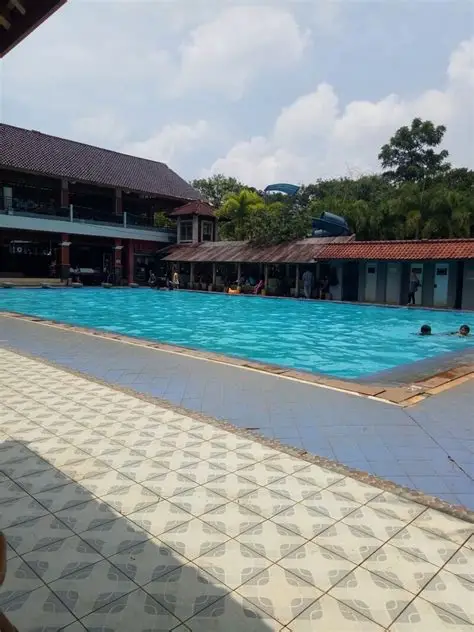
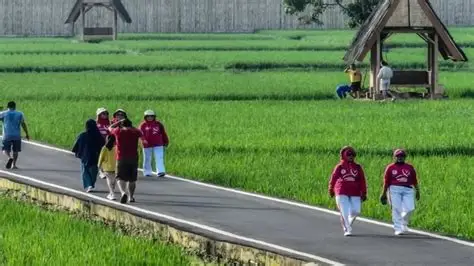
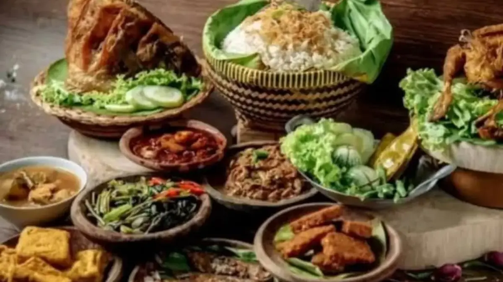
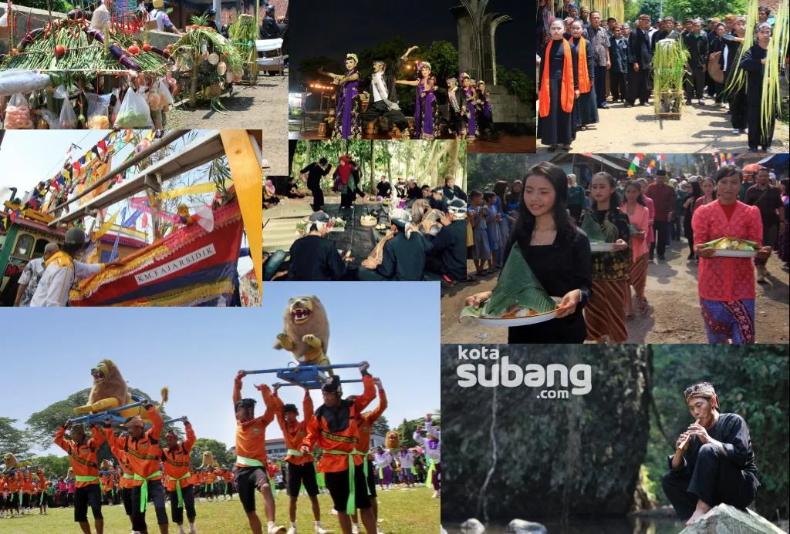

Inventarisasi titik lokasi atraksi dan potensi rekreasi Kecamatan Purwadadi.

Tempat rekreasi keluarga favorit di Purwadadi untuk aktivitas renang akhir pekan.

Hamparan sawah alami dengan atmosfer pedesaan yang sejuk dan menenangkan jiwa.

Jelajah cita rasa autentik Purwadadi melalui UMKM dan kuliner khas daerah.

Pelestarian tradisi Sunda dan kearifan lokal yang terus dijaga oleh masyarakat.